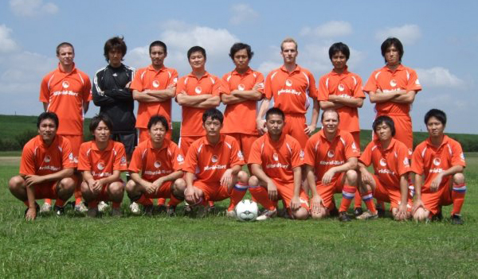

|
Misato, Saturday 5th September
It was with great trepidation that the Dutch team prepared to commence their new season.
Clad in their brand new uniforms (please note the dutch flag on the socks) the team got down to business as opposition were newly Division One demoted Swiss Kickers.
The first half of the game saw both teams defending in an orderly fashion, with limited chances on either side. The quality of the passing was good despite the clay dunes that plague the Misato badlands.
Something changed in the second half as the Swiss side shifted gears and started pressuring the Dutch back four, who managed to defend for a while but eventually capitulated on two fairly trivial mistakes.
The Dutch season off to a rocky start, but with many games to go opportunities to improve abound.
Overall a pleasant, correct game well refereed.
Report by L. Van der Limentanen

|

 |